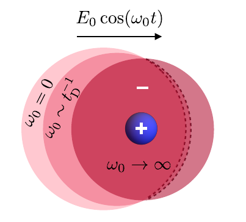

Ionic transport & correlations
How do interacting ions respond to an electric field? I use stochastic density functional theory and fluctuating hydrodynamics to study electrolyte conductivity and the evolution of ion–ion correlations.
My work examines the response to fields that are switched on, switched off, or oscillate in time. It connects the microscopic organization of the ions to the macroscopic electrical current.

